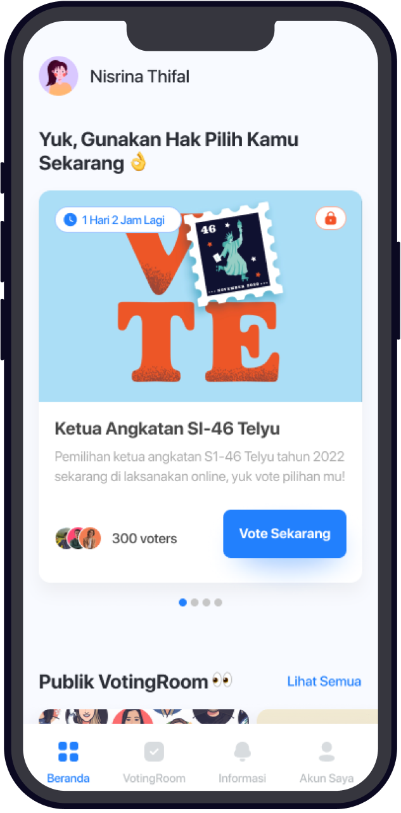
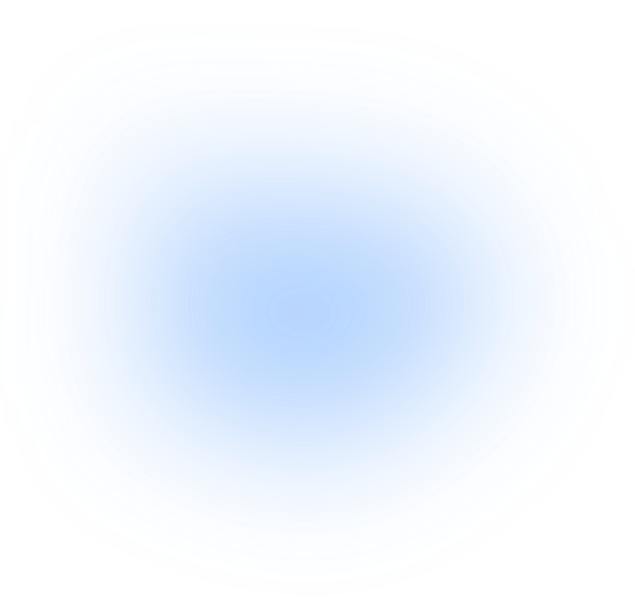
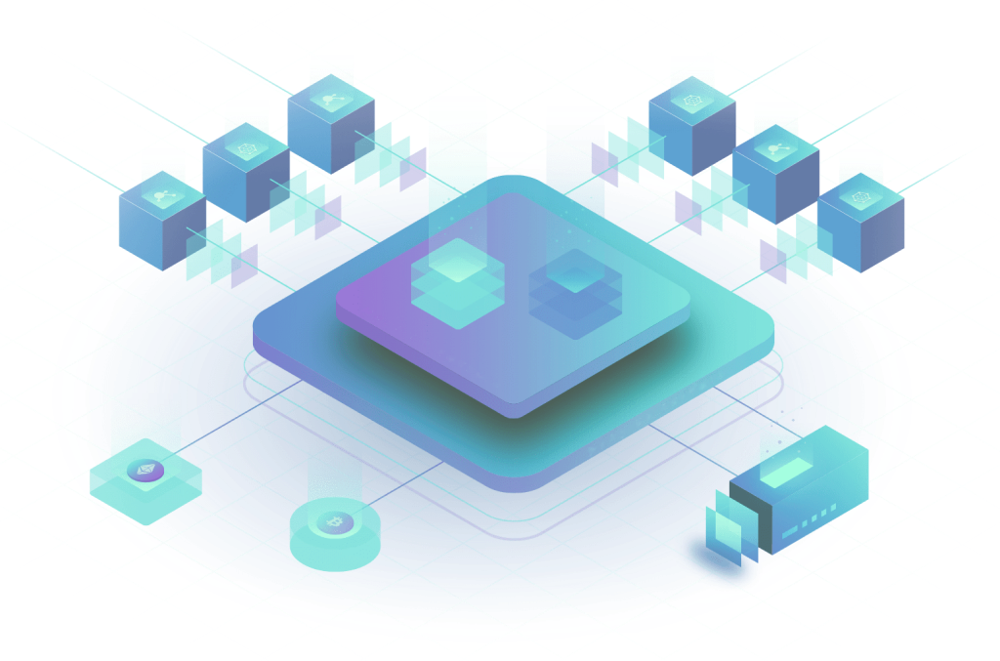
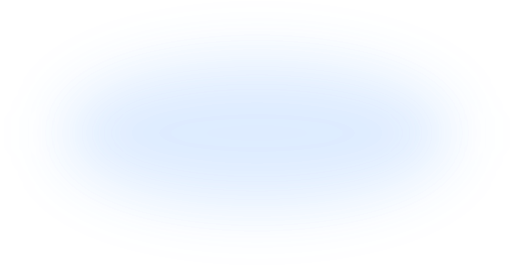
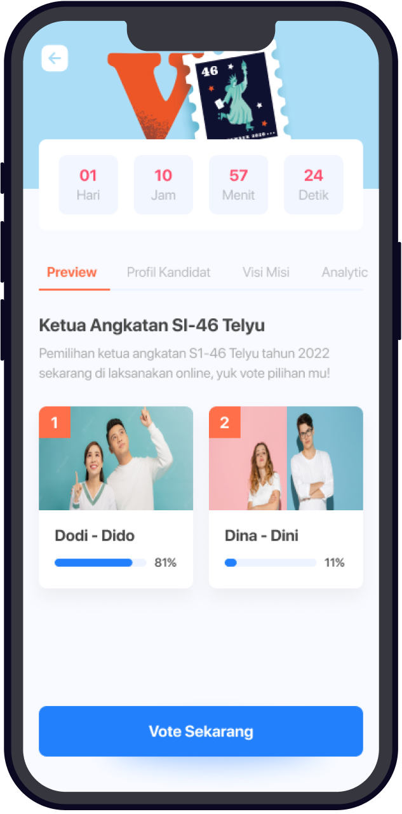
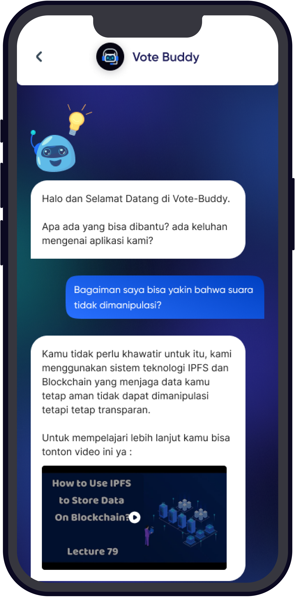
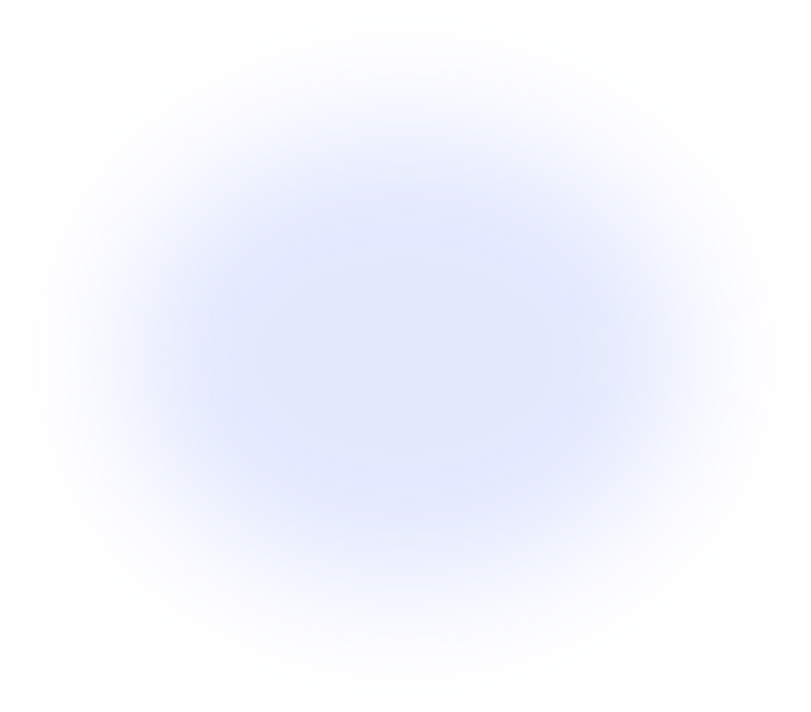
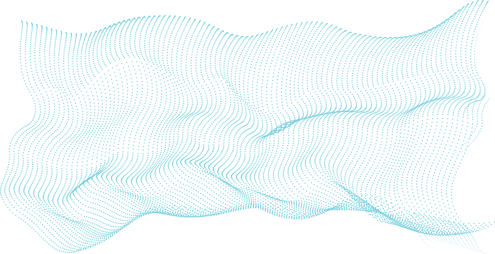

Voting Room
Membuat dan memilih Voting Room dengan mudah. Dari alur voting yang panjang, sekarang bisa kamu lakukan dalam satu genggaman.


Dengan Votergate voting di mana pun tanpa ada kecurangan dan human error di dalam demokrasi. Dengan menggunakan teknologi blockchain yang terdesentralisasi dan transparan.
Unduh Sekarang
Aplikasi berbasis teknologi blockchain dengan sistem yang tidak terpusat dan menjamin keamanan data terutama data suara dan data pengguna, kami menjaga informasi, menjamin integritas data, keamanan dan mengeliminasi kemungkinan bocornya suatu informasi.

Membuat dan memilih Voting Room dengan mudah. Dari alur voting yang panjang, sekarang bisa kamu lakukan dalam satu genggaman.

Memusatkan segala informasi dari sumber-sumber yang kredibel, hal ini juga mencegah kamu mengurangi risiko informasi hoax.

Tempat pengaduan atau bertanya mengenai proses vote dari setiap Voting Room. Berinteraksi dengan Smartchat, atau guide book.

Data vote dapat diekspor ke dalam bentuk data laporan dan analisis untuk keperluan traction dan validitas pemilihan suara tersebut yang simpel maupun mendalam.
Dapatkan uang dengan jadi relawan untuk menyaring berita hoax, selain itu berikan edukasi pengguna lainnya dengan membantu dan mengarahkan mereka melakukan voting sesuai prosedur.



Untuk menjamin demokrasi yang aman dan dapat dipercaya kami menggunakan pendekatan sebagai berikut
Votergate menggunakan verifikasi biometrik berupa sidik jari atau deteksi wajah yang terkoneksi dengan handphone pengguna dengan privasi data yang dipastikan terjaga, untuk memastikan pemilihan tidak diwakilkan.
IPFS (InterPlanetary File System) memungkinkan tidak ada data yang bisa dimanipulasi dan dipastikan semua data tidak mengalami kerusakan. Bahkan Votergate tidak dapat memodifikasi data yang ada.
Sebelum data dikirim ke blockchain, data akan terlebih dahulu di-hashing dengan SHA-256, walaupun data dapat diakses secara publik, tetap tidak ada yang tahu isi data tersebut kecuali disamakan dengan data aslinya.
Blockchain adalah solusi untuk melindungi data tersebut, dengan transaksi yang satu arah, memiliki nilai ID yang unik, dan ledger yang dapat diakses siapa saja. Data voting akan tetap orisinal, rahasia dan transparan.
Your vote is yours.
No one has access, even us.
FAQ
Kamu membuat atau memilih Voting Room di aplikasi, melakukan verifikasi biometrik, lalu memberikan suara. Suara di-hashing dengan SHA-256 dan tersimpan di blockchain serta IPFS, sehingga tidak bisa dimanipulasi.
Hasil dihitung dari data suara yang tersimpan di ledger blockchain. Ledger tersebut dapat diakses siapa saja dan data yang sudah tersimpan tidak dapat diubah, bahkan oleh Votergate, sehingga hasil yang tampil sesuai dengan suara yang tercatat.
Sebelum dikirim ke blockchain, data suara di-hashing dengan SHA-256 sehingga isinya tidak dapat dibaca pihak lain. Verifikasi biometrik memastikan suara tidak diwakilkan, dan penyimpanan IPFS menjaga data dari kerusakan dan manipulasi.
Votergate saat ini dapat diakses melalui versi demo. Unduh aplikasinya untuk mencoba langsung dan memberikan feedback.
Jadilah orang yang pertama yang mengakses versi demo Votergate dan berikan feedback langsung!
Unduh Aplikasi